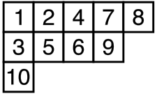

-
Haskell implementation of the Robinson-Schensted algorithm
2016-08-07
SourceGiven a permutation \(\sigma\) of \(\{1, \ldots, n\}\), the Robinson-Schensted correspondence associates to \(\sigma\) a pair \((P,Q)\) of two standard Young tableaux of weight \(n\) having the same shape.
This map \(RS\colon \sigma \mapsto (P,Q)\) is obtained by the Schensted algorithm, and we give an Haskell implementation of this algorithm below (I gave a R implementation of this map in a previous article). A nice explanation of this algorithm is given in R. T. Bayley’s master thesis, to which we refer for more details, if needed.
In Haskell, we represent a permutation as a list of integers and a Young tableau as a list of lists of integers. For example, the Haskell list
[[1,2,4,7,8], [3,5,6,9], [10]]represents this (standard) Young tableau:
The main part of the algorithm giving the pair \((P,Q)=RS(\sigma)\) is the construction of the first Young tableau \(P\). Given the permutation \(\sigma=(\sigma_1, \ldots, \sigma_n)\), the standard Young tableau \(P\) is the final Young tableau \(P_n\) of the sequence \((P_0, \ldots, P_n)\) of Young tableaux which is recursively obtained as follows. One starts with the empty Young tableau \(P_0=[\,]\) and one recursively defines \(P_{k+1}\) as the Young tableau obtained by bumping \(\sigma_{k+1}\) to \(P_k\), an action to be explained below. This is denoted by \(P_{k+1} = P_k \leftarrow \sigma_{k+1}\), so that the final Young tableau is
\[ P_n = \Bigl(\cdots\bigl(([\,] \leftarrow \sigma_1) \leftarrow \sigma_2\bigr) \cdots \leftarrow \sigma_n\Bigr). \] Now we explain the bumping action. The bumping action of an integer \(e\) to a Young tableau \(P\) is a Young tableau denoted by \(P \leftarrow e\) which is obtained by this algorithm:if \(P\) is empty then \(P \leftarrow e = [[e]]\);
if \(e\) is strictly greater than all the numbers in the first row of \(P\), then the Young tableau \(P \leftarrow e\) is obtained from \(P\) by placing \(e\) at the end of its first row;
otherwise, \(P \leftarrow e\) is the Young tableau whose first row is obtained by replacing the first element \(w\) of the first row of \(P\) that is larger than \(e\) with \(e\), and by stacking this new row on the top of \(P_{-1} \leftarrow w\), where \(P_{-1}\) is the Young tableau obtained from \(P\) by removing its first row.
Thus, the shape of \(P \leftarrow e\) is the shape of \(P\) plus an additional square. Consider for example the permutation \(\sigma = (2,3,1)\). The action of \(\sigma_1=2\) to the empty tableau \(P_0=[\,]\) generates the tableau \(P_1 := P_0 \leftarrow \sigma_1 = [[2]]\). The action of \(\sigma_2=3\) to the tableau \(P_1\) generates the tableau \(P_2 := P_1 \leftarrow \sigma_2 = [[2,3]]\). The action of \(\sigma_3=1\) to the tableau \(P_2\) generates the tableau \(P_3 := P_2 \leftarrow \sigma_3 = [[1,3], [2]]\).
The
replacefunction below performs the replacement. It takes as arguments a list of integersxsand an integere. It finds the index of the first element ofxsgreater thane, replaces this element withe, and returns the new list and the replaced element in a pair.import Control.Lens import Data.List let replace :: [Int] -> Int -> ([Int], Int); replace xs e = ((element i .~ e) xs, xs !! i) where i = (\(Just x) -> x) (findIndex (>= e) xs)For example:
> replace [1, 3, 5, 6] 4 ([1,3,4,6],5)This function does not work if there is no element greater
ein the list.Now, the Young tableau \(Q\) is the final Young tableau \(Q_n\) of the sequence \((Q_0, \ldots, Q_n)\) constructed in parallel as follows. This sequence starts with the empty Young tableau \(Q_0 = [\,]\). Each Young tableau \(Q_k\) has the same shape as \(P_k\). The Young tableau \(Q_k\) is obtained by adding a square to \(Q_{k-1}\) at the same location of the square which is added to \(P_{k-1}\) to get \(P_k\), and by putting the integer \(k\) in this square. For the above example where \(\sigma=(2,3,1)\), this gives \(Q_1=[[1]]\), \(Q_2=[[1,2]]\) and \(Q_3=[[1,2], [3]]\).
Finally, the Schensted algorithm has the following form:
given a permutation \(\sigma=(\sigma_1, \ldots, \sigma_n)\), do:
- \((P_0, Q_0) \leftarrow ([\,],[\,])\)
- for \(i\) in \(1:n\)
- \((P_i, Q_i) \leftarrow \text{bump}(P_{i-1}, Q_{i-1}, \sigma_i, i)\)
Therefore, once we get an implementation of the
bumpfunction, the \(RS\) map is implemented as follows in Haskell:let rs :: [Int] -> ([[Int]],[[Int]]); rs sigma | (n == 1) = bump [] [] (sigma !! 0) 1 | otherwise = bump p q (last sigma) n where (p,q) = rs (fst (splitAt (n-1) sigma)) n = length sigmaIt remains to write the
bumpfunction.let bump :: [[Int]] -> [[Int]] -> Int -> Int -> ([[Int]],[[Int]]); bump p q e i = if p==[] then ([[e]], [[i]]) else if e > (last (p !! 0)) then (((p1 !! 0) ++ [e]) : pend, ((q1 !! 0) ++ [i]) : qend) else (newp1 : p2, (q !! 0) : q2) where (p1, pend) = splitAt 1 p (q1, qend) = splitAt 1 q (newp1, w) = replace (p !! 0) e (p2, q2) = bump (drop 1 p) (drop 1 q) w iAs an example:
> rs [1, 3, 6, 4, 7, 5, 2] ([[1,2,4,5],[3,7],[6]],[[1,2,3,5],[4,6],[7]])
- Home
- About
- PoirotReproducible Blogging with R Markdown
- SlidifyReproducible html5 slides from R markdown
- R-bloggersBlog posts about R, contributed by R bloggers worldwide.
- stla.overblogMy previous blog
- Timely Portfolio A great blog about R, Javascript, and more